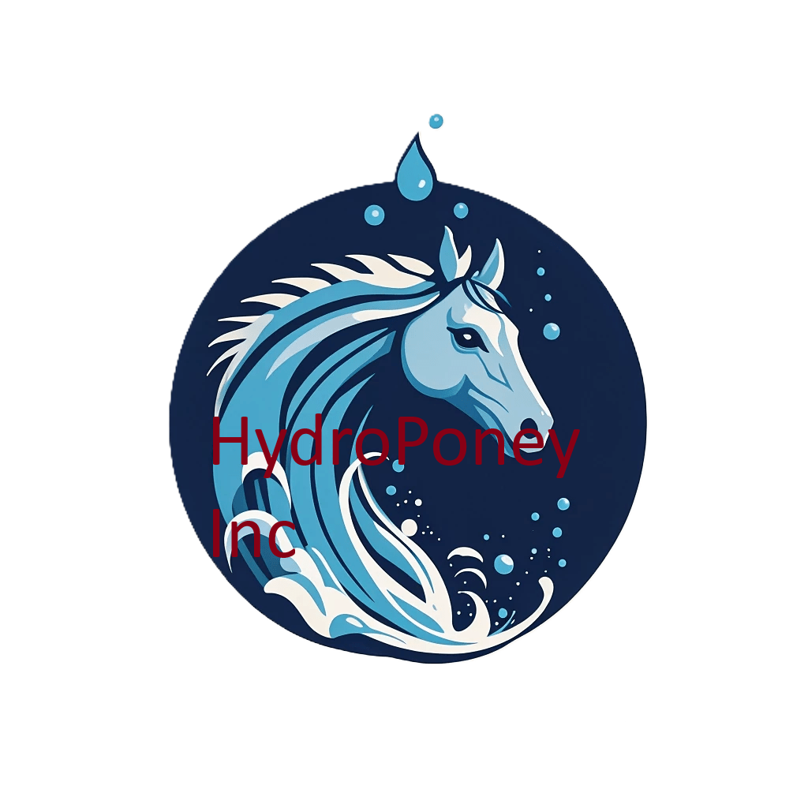

Nos Partenaires
Découvrez les entreprises qui nous soutiennent dans le développement de l'aquaponey

HydroPoney Inc.
"Flottez avec style !"
Spécialisée dans la conception de selles et équipements d'aquaponey, HydroPoney Inc. propose des équipements ultra-légers et étanches pour une expérience aquatique unique.
Équipement Premium
Innovation
Qualité
AquaPoney Academy
"Formation d'excellence"
Centre de formation spécialisé dans l'aquaponey, proposant des programmes certifiants pour les moniteurs et les passionnés.
Formation
Certification
Expertise
PoneyPool Solutions
"L'excellence aquatique"
Concepteur et installateur de piscines spécialisées pour l'aquaponey, avec des solutions adaptées à tous les niveaux.
Installation
Maintenance
Conseil
Devenir Partenaire
Vous souhaitez rejoindre notre réseau de partenaires ? Contactez-nous pour discuter des opportunités de collaboration.
Nous Contacter